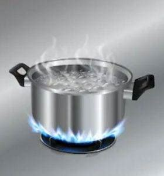

Ugali
Home
Ingridents
- Maize Flour (Cornmeal)
- Water: Depending on the number of diners, for instance 500ml of water is equal to one person.
Directions
- Boil water in a pot.

- Add cornmeal, a little at a time as you stir.
- Continue stirring, the mixture will form a dough-like consistency as it cooks. Break any lumps that form by pressing them on the sides of your pot.
- Shape the ugali, remove it from the heat, and transfer it to a plate and serve.
What can you serve with ugali.
When it comes to serving ugali, any type of savory stews, soups, stir fries, grilled meats, poultry and fish works great. For a true Kenyan feel, serve ugali with Nyama Choma,
Kenyan Beef stew, Kuku Choma,
Sukuma Wiki,
Kachumbari,
Samaki wa Kupaka, chicken stew, or your favorite vegetables.